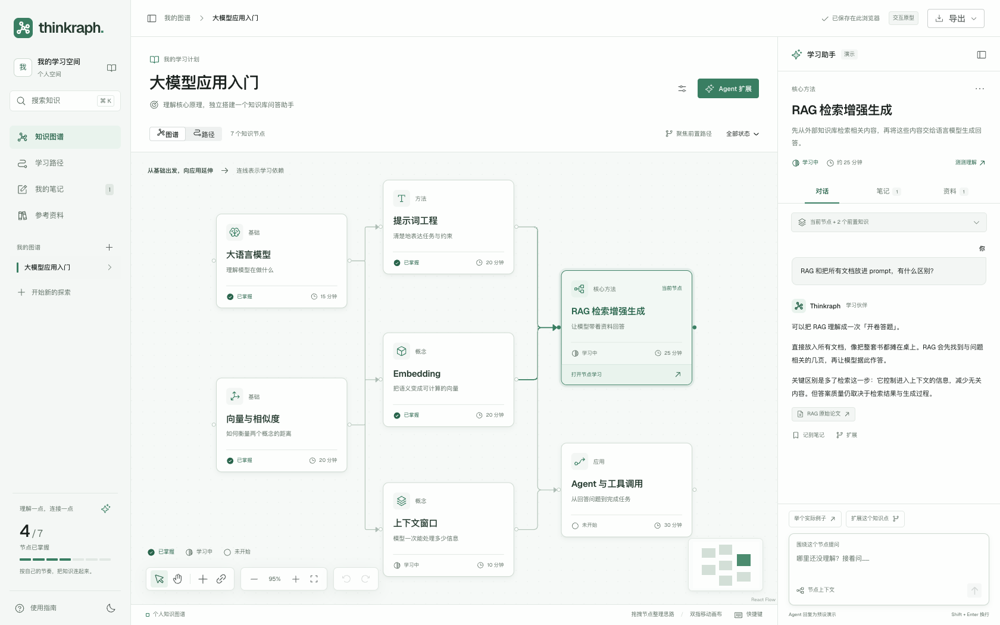
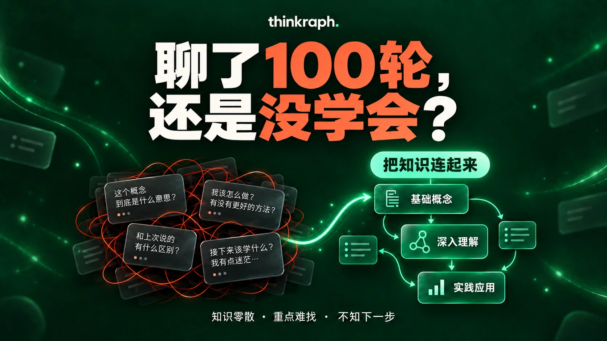

聊过很多，
还想把它们连起来。
长对话留下答案，图谱为理解找到位置。看清概念的关系，找到自己的下一步。

一个节点，接着探索。
从局部问题出发，始终看得见全貌。
问题有位置，上下文跟着走。
点击一个知识点，查看它的前置知识、对话、笔记和资料。下次回来，继续已有的探索。
对话按节点保存，切换主题也能回到原来的问题。
在本机，开始你的学习空间。
安装 Node.js 22.21.1 或更新版本，然后运行以下命令。在浏览器打开 127.0.0.1:5173。
图谱和笔记保存为本地 JSON 文件。配置模型后即可使用 Agent；手工编辑、笔记和学习路径可直接使用。
查看完整说明终端
git clone https://github.com/PPixie/thinkraph.git
cd thinkraph
npm install
npm run dev